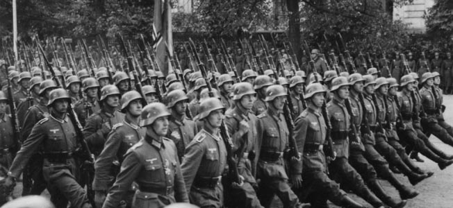
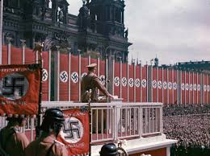
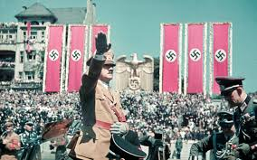
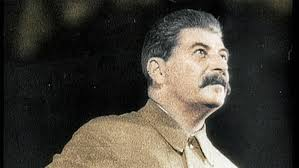
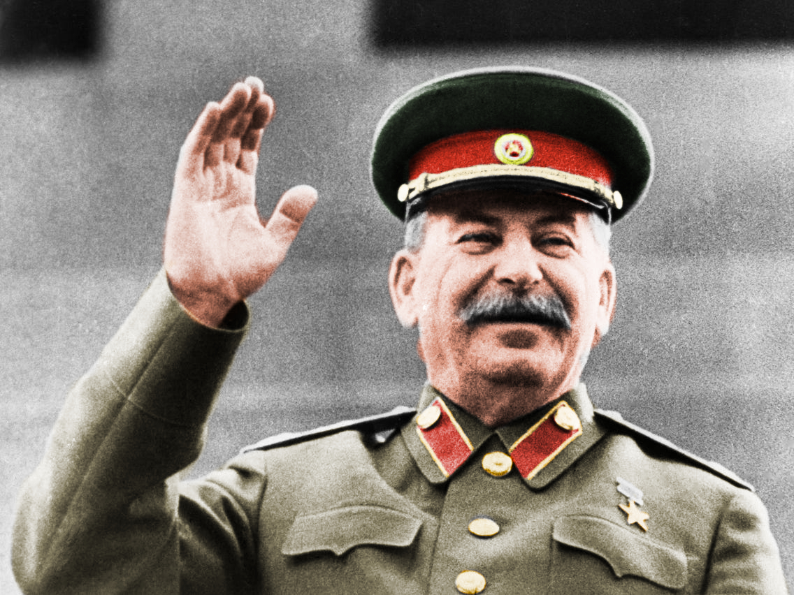

Awal mula Perang Dunia ke-2

Perang Dunia II dimulai pada 1 September 1939 ketika Jerman, yang dipimpin oleh Adolf Hitler, menyerbu Polandia. Invasi ini memicu respons dari Britania Raya dan Prancis, yang kemudian menyatakan perang terhadap Jerman. Konflik ini berkembang menjadi konflik global melibatkan sejumlah besar negara di berbagai belahan dunia. Faktor penyebab utama melibatkan ketegangan politik, ekonomi, dan militer yang memuncak setelah serangkaian peristiwa, termasuk invasi Jerman ke Polandia, penandatanganan pakta non-agresi Molotov-Ribbentrop antara Jerman dan Uni Soviet, serta serangan Jepang ke Pearl Harbor pada 1941. Perang Dunia II berlangsung dari 1939 hingga 1945 dan menyebabkan kerugian besar, mengubah peta politik global, dan membawa dampak besar terhadap sejarah dunia.
Selama Perang Dunia II, terjadi sejumlah peristiwa kunci yang mencakup kampanye militer di berbagai front, termasuk Eropa, Asia, dan Afrika. Pertempuran besar seperti Pertempuran Stalingrad, Pertempuran Midway, dan Pertempuran Normandia memiliki dampak strategis yang besar. Selama perang, muncul juga kebijakan genosida, terutama Holocaust yang dilakukan oleh rezim Nazi Jerman di bawah Adolf Hitler, yang menyebabkan kematian jutaan orang Yahudi dan kelompok minoritas lainnya.
Pada tahun 1941, Perang Dunia II menjadi konflik dunia sejati ketika Amerika Serikat bergabung setelah serangan Jepang ke Pearl Harbor. Aliansi besar, yang dikenal sebagai Sekutu, terbentuk, termasuk Amerika Serikat, Uni Soviet, Britania Raya, dan negara-negara lainnya. Mereka berhadapan dengan Poros yang dipimpin oleh Jerman, Italia, dan Jepang.
Konflik ini mencapai puncaknya pada tahun 1945, ketika Sekutu berhasil memenangkan perang setelah serangkaian kampanye militer yang menentukan, seperti invasi Normandia dan jatuhnya Berlin. Perang Dunia II berakhir secara resmi pada 2 September 1945, setelah Jepang menyerah secara takzim. Dampaknya sangat luas, termasuk pembentukan Perserikatan Bangsa-Bangsa untuk mencegah konflik global di masa depan.
Korban Jiwa
Perang Dunia II (PD2) menyebabkan jumlah korban jiwa yang sangat besar di seluruh dunia. Meskipun sulit untuk memberikan angka yang pasti karena adanya perbedaan data dan perkiraan, perkiraan umum menyatakan bahwa jumlah korban jiwa akibat PD2 berkisar antara 70 hingga 85 juta orang.
Blok Sekutu:
- Uni Soviet: Diperkirakan sekitar 10-13 juta tentara dan 7-20 juta warga sipil tewas.
- Tiongkok: Diperkirakan sekitar 3-4 juta tentara dan 7-8 juta warga sipil tewas.
- Amerika Serikat: Sekitar 400.000 tentara tewas.
- Britania Raya: Sekitar 383.700 tentara tewas.
- Prancis: Sekitar 213.000 tentara tewas.
Blok Poros:
- Jerman: Diperkirakan sekitar 5-5,5 juta tentara dan 0,7-0,8 juta warga sipil tewas.
- Uni Soviet (selama invasi Jerman ke Uni Soviet): Diperkirakan sekitar 3,3-10 juta tentara dan warga sipil tewas.
- Italia: Sekitar 301.400 tentara tewas.
- Jepang: Diperkirakan sekitar 2-2,6 juta tentara tewas.
Warga Sipil:
Jumlah korban warga sipil sangat tinggi dan sulit dipastikan dengan tepat. Diperkirakan bahwa sekitar 50-55 juta warga sipil tewas akibat tindakan perang, termasuk genosida, Holocaust, dan tindakan kekerasan lainnya.
Bagaimana "Third Reich" membangun kembali Jerman
 
Third Reich, yang dipimpin oleh Partai Nazi di bawah kepemimpinan Adolf Hitler, mengimplementasikan serangkaian kebijakan dan program untuk membangun kembali Jerman setelah mengalami keruntuhan ekonomi dan kehancuran pasca Perang Dunia I. Berikut adalah beberapa elemen utama dalam upaya pembangunan kembali Jerman oleh Third Reich:
-
Program Pekerjaan Umum (Public Works Programs):
Hitler meluncurkan program pembangunan infrastruktur besar-besaran, termasuk pembangunan jalan, jembatan, dan proyek konstruksi lainnya. Program ini bertujuan untuk menciptakan lapangan kerja, memperbaiki ekonomi, dan meningkatkan kesejahteraan rakyat.
-
Autarki Ekonomi (Economic Autarky):
Third Reich berusaha untuk membuat Jerman mandiri secara ekonomi dengan mengurangi ketergantungan pada impor. Kebijakan ini mencakup peningkatan produksi dalam negeri untuk memenuhi kebutuhan ekonomi dan militer.
-
Reindustrialisasi:
Pemerintah Nazi mendorong reindustrialisasi Jerman dengan fokus pada sektor-sektor utama seperti pertanian, industri berat, dan teknologi militer. Program ini bertujuan untuk meningkatkan daya saing ekonomi Jerman.
-
Pendidikan dan Propaganda:
Melalui sistem pendidikan dan propaganda, rezim Nazi mencoba untuk membentuk pandangan masyarakat tentang keunggulan ras Arya dan kebijakan-kebijakan pemerintah. Propaganda juga digunakan untuk menciptakan dukungan publik terhadap rezim Nazi.
-
Penindasan Politik dan Anti-Semitisme:
Rezim ini menindas oposisi politik dan mengimplementasikan kebijakan anti-Semitisme yang menyebabkan pengusiran dan penindasan Yahudi. Properti yang disita dari kelompok-kelompok yang dikejar digunakan untuk mendukung program pembangunan Nazi.
-
Kebijakan Ekspansionis:
Upaya untuk memperluas wilayah Jerman melalui aneksasi dan invasi militer, seperti invasi ke Austria (Anschluss) dan pendudukan Sudetenland, memberikan sumber daya tambahan dan basis ekonomi untuk memperkuat posisi Jerman.
-
Ketertiban dan Disiplin:
Pemerintah Nazi menekankan pada ketertiban dan disiplin dalam masyarakat, menciptakan iklim politik yang mendukung eksekusi kebijakan-kebijakan rezim Nazi tanpa hambatan.
Meskipun pembangunan kembali ini memberikan dampak positif pada ekonomi dan infrastruktur Jerman pada awalnya, ini juga terkait erat dengan kebijakan diskriminatif, kebijakan anti-Semitisme, dan penindasan politik yang mengakibatkan tragedi besar seperti Holocaust dan Perang Dunia II.
Mengapa Pemimpin "tangan besi" ini begitu paranoid
 
-
Latar Belakang Pribadi dan Pengalaman Pahit:
Stalin mengalami masa kecil yang sulit dan sering kali terlibat dalam kegiatan revolusioner yang melibatkan risiko tinggi. Pengalamannya sebagai tahanan politik dan kehilangan anggota keluarganya selama periode Revolusi Rusia dan Perang Saudara Rusia dapat meningkatkan kecenderungan paranoidnya.
-
Purges dan Pengkhianatan Internal:
Stalin melancarkan serangkaian pembersihan (purges) yang brutal dalam tubuh pemerintahan dan Partai Komunis Soviet pada tahun 1930-an. Ini melibatkan pembunuhan dan penghapusan dari pemerintahan orang-orang yang dianggap sebagai ancaman potensial, bahkan termasuk sekutu-sekutunya sendiri seperti para petinggi militer dan partai.
-
Ketidakpercayaan Terhadap Kepemimpinan Asing:
Stalin selalu merasa dicurigai oleh kekuatan asing, terutama setelah Perang Dunia II. Dia sangat takut akan konspirasi dan intervensi asing yang mungkin melibatkan kelompok-kelompok internal di Uni Soviet.
-
Kendali Penuh atas Informasi:
Stalin menjaga kendali penuh atas aliran informasi dan propaganda. Dia menciptakan atmosfer di mana orang-orang takut untuk memberikan berita yang mungkin tidak sesuai dengan kebijakan pemerintah, yang memperdalam isolasi dan ketidakpercayaan.
-
Kekuasaan Absolut dan Kultus Personalitas:
Kekuasaan Stalin di Uni Soviet adalah mutlak, dan dia mengembangkan kultus personalitas yang memuja dirinya sebagai pemimpin yang tak tergantikan. Namun, hal ini juga menciptakan lingkungan di mana kritik atau ketidaksetujuan dianggap sebagai penghianatan terhadap Stalin dan pemerintahnya.
-
Ketidakstabilan Politik dan Tekanan Eksternal:
Uni Soviet menghadapi tekanan eksternal yang signifikan selama masa Stalin, termasuk ancaman invasi dari negara-negara Barat dan perubahan politik di sejumlah negara. Situasi ini dapat meningkatkan ketidakamanan dan ketidakpercayaan Stalin terhadap siapa pun yang dianggap sebagai ancaman potensial, baik di dalam maupun di luar negeri.
Penggabungan faktor-faktor ini menciptakan lingkungan di mana Stalin merasa perlu untuk membasmi segala bentuk potensi ancaman, nyata atau tidak, untuk mempertahankan dan memperkuat kekuasaannya. Paranoidisme Stalin berdampak luas pada masyarakat Uni Soviet, menyebabkan ketidakstabilan politik, kecemasan massal, dan kebijakan represif yang melibatkan penindasan politik dan pembunuhan massal.